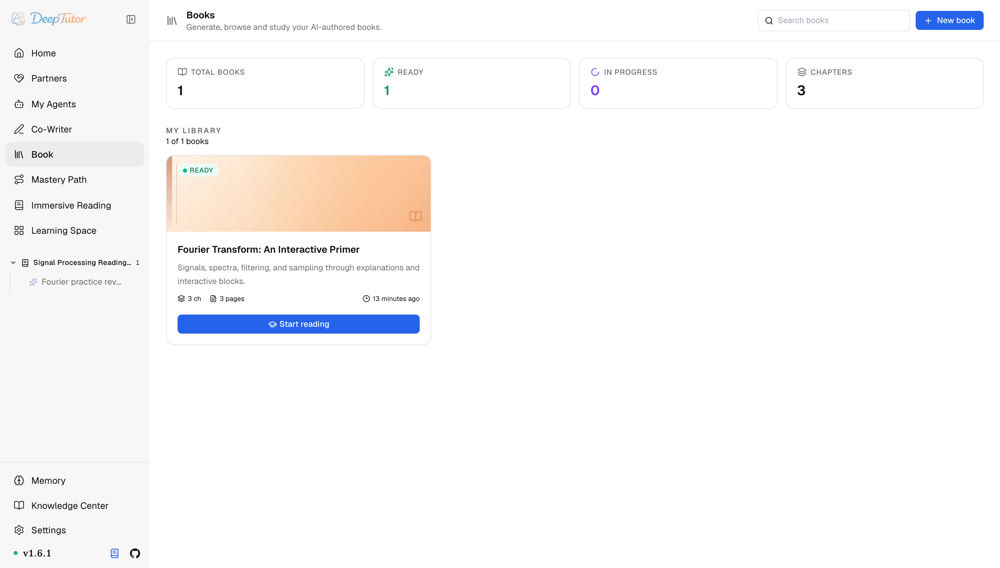
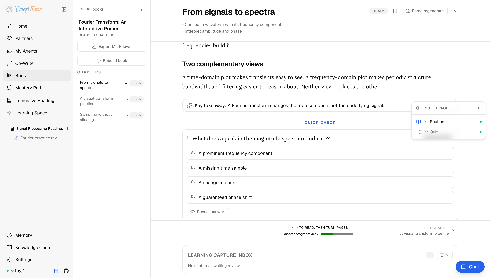
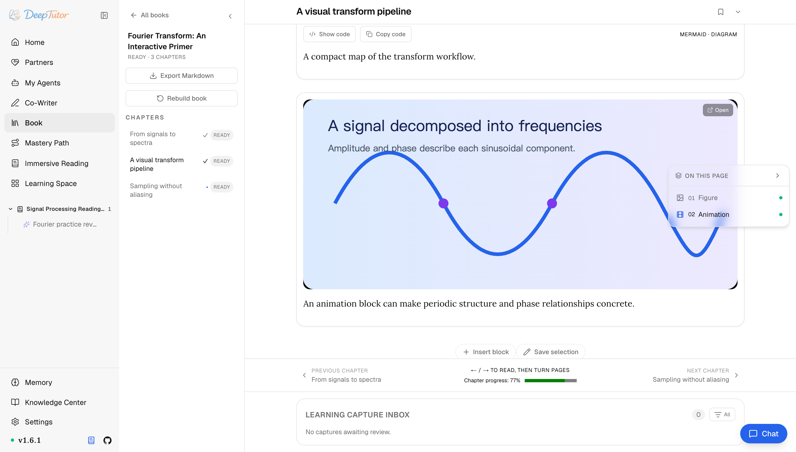
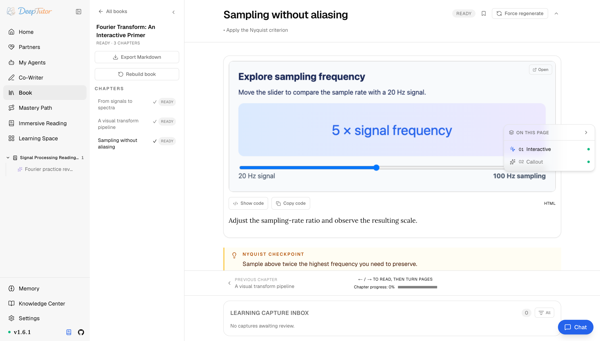
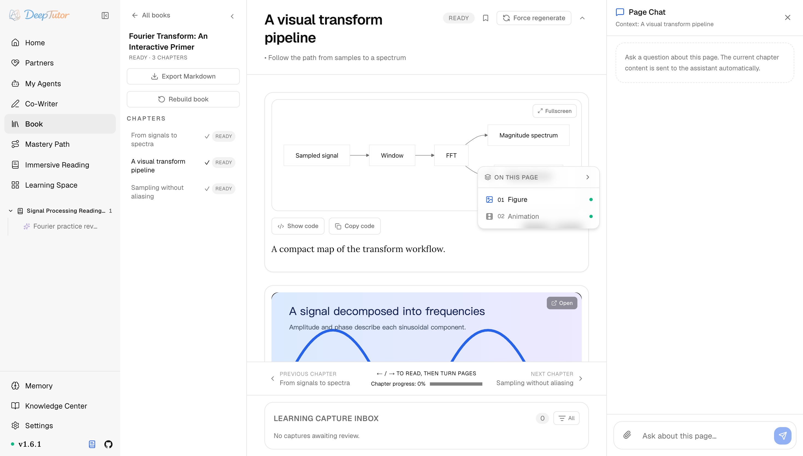
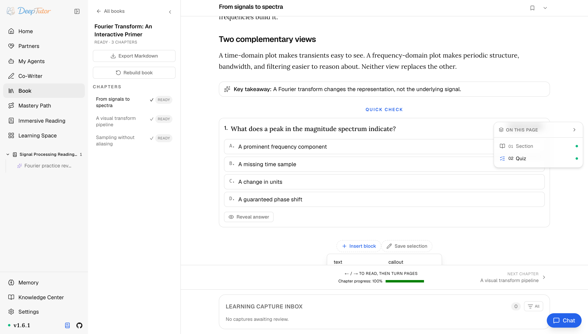
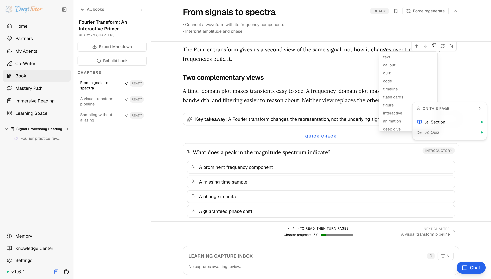

探索 DeepTutor書籍
知識庫一鍵變活書？11 種塊搭出會測驗、會動畫的教材，DeepTutor 書籍功能實測！｜零度解說
把你的知識庫、筆記本、題庫與聊天歷史編譯成可互動的「活書」——帶測驗、動畫、互動元件、圖表，以及逐頁對話。
原文連結：https://docs.deeptutor.info/zh-cn/explore/book/
這個功能到底能幹嘛？一句話：把你手裡的材料，直接變成一本會跟你互動的「活書」。
最近我在整理 DeepTutor 的時候，專門把它的書籍（Book）功能從頭到尾跑了一遍。
先甩幾個真實數字：一本書由 11 種內容塊搭成，來源可以選知識庫、筆記本、題庫、聊天歷史 4 種，編譯過程逐章給即時成本預估，還能對每一頁直接對話。
但材料變成書，這閱讀體驗到底是真能用，還是個花架子？
接下來我們就把建立流程、閱讀體驗、編輯玩法和維護命令全部過一遍，看看這本活書到底值不值得你花時間編譯。
它到底是個什麼東西
互動式書本把你的材料變成一本「活書」（living book），遠不止靜態 PDF：一個由「帶型別的塊」搭起來的閱讀環境：你可以對它測驗、把它當動畫看、當作可操作的即時元件來玩，並逐頁與它對話。
入口在哪裡
點選左側欄的 Book。
書庫同時展示個人書與獲准閱讀或協作編輯的管理員共享書，並提供快速統計與書籍卡片；只有獲准建立個人書時才顯示 New book。

建立流程，5 步走完
1、如果顯示 New book，開啟 Book → New book。
2、選擇一個 主題 與 來源：知識庫、筆記本、題庫或聊天歷史。
3、在編譯前審閱生成的 提案（章節大綱）。
編輯器會顯示由編譯器範本推導的 逐章即時成本預估，並隨章節的增刪或型別調整而更新，花多少心裡有數。
選好允許生成的內容型別後，再選擇 Generate all chapters 或 First chapter only；只有前者會把整份章節骨架全部排入佇列。
4、讓引擎為每一章生成頁面規劃與塊。
5、閱讀、註解、自測，或在頁面旁對話。
這裡有個細節值得單獨說：編譯的生命週期比啟動它的那個請求更長。
confirm_spine 在頁面殼建好後就回傳，而它排下去的活兒還要跑上幾分鐘；事件流按書歸屬，所以你可以看著這本書被寫出來，重新整理或斷線重連都不會中斷。
更有意思的是，書會追蹤來源的指紋（fingerprints），因此當某個知識庫在編譯後發生變化時，維護命令能報告這種漂移（見下文）。
閱讀體驗才是重頭戲
一章書由帶型別的塊（typed blocks）搭成，關鍵在於：每個塊都是承載某個想法的恰當媒介：一個概念變成一道測驗，一段推導變成一段動畫，一個過程變成一個互動元件。
測驗塊與閃卡塊把一節內容變成主動回憶，答案在你點開前一直隱藏，右側的逐頁大綱讓長章節始終好導航。

動畫塊把渲染好的視覺內容直接嵌進頁面，安裝相應附加元件後也包括 Manim 影片，當一段推導看比讀更易懂時尤其有用。

互動塊是即時的 HTML 元件，書裡的例子是拖曳滑塊即時改變取樣頻率比例：讀者是在「操作模型」中學習，而不只是「讀到」它。
Figure 與 interactive 塊使用和主頁 Visualize 相同的 deeptutor.visualization/v1 結果封裝與沙箱 viewer，因此 SVG、Mermaid、圖表和 HTML 互動在書頁與獨立視覺化之間保持一致。

圖表塊就地渲染 Mermaid / 概念圖，而每一頁都有一個 Page Chat（頁面對話）：就你正在讀的內容提問，得到錨定於該頁的答覆。

這一套塊組合下來，11 種型別的豐富程度是真的太狂了，讀書變成了闖關。
而且讀完之後不是讀完就完了。
讀過的頁面、書籤與測驗作答彙總為完成度分數和薄弱章節；選中一段文字可把它送進待審閱的 Learning capture inbox，再批准或拒絕是否轉成學習材料；每本書都可匯出為 Markdown。
暫停長編譯時會先持久化狀態，再取消排隊與進行中的工作並保留已完成頁面；重新整理或重新啟動後仍保持暫停，只有你明確點選繼續才會恢復。
隱私這塊也想得很周到：管理員共享書的標準章節內容存放在 admin 工作區；每位讀者的進度、書籤、測驗作答、learning capture 與 Page Chat 關聯則留在自己的工作區並保持私密。
書不是死的，隨時改
個人書以及擁有 edit 權限的共享書可以編輯，並非定格。
用 Insert block（插入塊）在章節任意位置加塊，並從完整調色盤裡選型別：text、callout、quiz、code、timeline、flash cards、figure、interactive、animation、deep dive、user note。
只讀共享書不會顯示這些編排控制元件。

擁有 edit 權限時，懸停塊即可移動、重新生成、刪除或切換型別。
只有 text 與 callout 這類純文字塊顯示 Edit text，user note 有自己的編輯器；結構化塊必須重新生成。
共享編輯使用 revision 檢查；若協作者先提交造成衝突，請重新整理重試。共享刪除仍只允許 admin。

來源怎麼選
| 來源 | 適用於 |
|---|---|
| 知識庫 | 想要有依據的教材/論文內容。 |
| 筆記本 | 已有整理好的筆記或先前的摘要。 |
| 題庫 | 想要以練習為中心的頁面。 |
| 聊天歷史 | 想把一段輔導會話變成學習材料。 |
維護命令
deeptutor book list
deeptutor book health <book_id>
deeptutor book refresh-fingerprints <book_id>三條命令很好記：list 看書單，health 查健康狀態，refresh-fingerprints 就是上面說的指紋重新整理，一本書的日常維護全包了。
相關閱讀
編譯過程遇到問題，歡迎在留言區留言，把報錯的完整日誌貼出來，我看到會回覆。